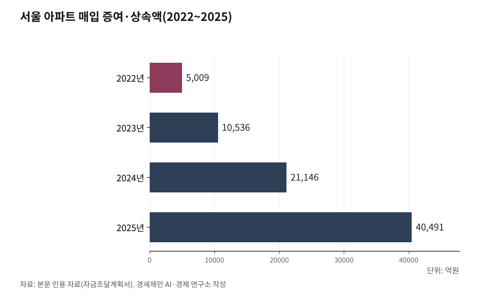

[한국경제 불편한 진실⑲] 계층 이동 — 좁아진 사다리, 그 자리를 메우는 부모 지갑
올 상반기 서울 부동산 증여 등기 1만3518건, 1년 만에 82.9% 증가
소득이동성 34.1%로 역대 최저, 하위 20% 탈출률 첫 20%대
39세 이하 주택 보유율 27.7%, 순자산 상·하위 20% 집값 격차 117배
올 상반기 서울에서 부동산을 물려주겠다며 낸 증여 등기가 1만3518건이다. 지난해 같은 기간 7391건보다 6127건, 82.9% 늘었다. 4월 한 달만 3916건으로 1년 전 1454건의 세 배 가까이 됐다. 대법원 등기정보광장 집계다.
물려주는 쪽이 늘면 물려받는 쪽도 늘어난다. 집을 사는 데 드는 돈이 어디서 나오는지가 바뀌고 있다는 뜻이다. 계층 이동의 불편한 진실은 그 출처가 노동에서 부모로 옮겨 앉는 자리에 있다.
1. 집 살 돈의 7%가 부모에게서 온다
서울에서 집을 살 때 내는 자금조달계획서에서 증여와 상속으로 댄 돈의 비중이 올해 4월 7.13%였다. 2020년 10월 통계를 만든 뒤 가장 높다. 5월에도 6.91%로 두 번째였는데, 지난해 5월은 3.8%였다.
금액은 더 가파르다. 서울 아파트 매입에 들어간 연간 증여·상속액은 2022년 5009억원에서 2023년 1조536억원, 2024년 2조1146억원, 2025년 4조491억원으로 늘었다. 올해는 1월부터 5월까지 누적만 2조7464억원이다. 대출을 조일수록 부족한 돈을 부모에게서 구하는 사람이 늘어난다.

2. 사다리가 아니라 계단참이다
국가데이터처가 2025년 10월 27일 낸 2023년 소득이동통계를 보면 소득이동성은 34.1%다. 1년 전보다 0.8%포인트 줄어 통계 작성 뒤 가장 낮다. 소득분위가 올라간 사람은 17.3%, 내려간 사람은 16.8%다. 나머지 65.9%는 1년 전 자리에 그대로 있었다.
바닥과 꼭대기는 더 굳었다. 소득 1분위 탈출률은 29.9%로 전년 30.9%에서 1%포인트 떨어져 처음 20%대로 내려왔다. 반대로 5분위 유지율은 85.9%다. 이 통계는 국민의 20%인 1100만명 넘는 사람의 소득을 해마다 같은 개인으로 좇은 행정자료다.
머물수록 나가기 어려워진다. 2017년 소득 1분위였던 사람 가운데 27.8%는 7년이 지난 2023년에도 1분위였다. 1년 뒤 빠져나간 비율은 32.4%였지만, 7년째에 빠져나간 비율은 3.3%로 줄었다. 처음 한 해가 지나면 문이 좁아진다.
3. 청년이 먼저 멈춘다
청년층(15~39세)은 원래 이동성이 가장 높은 나이대다. 그런데 소득 1분위 청년의 탈출률이 40.1%에서 38.4%로 1.7%포인트 떨어졌다. 전체 청년의 상향이동 비율 23.0%는 전년과 같았으니, 아래쪽 청년만 따로 굳은 셈이다.
자산 쪽은 더 뚜렷하다. 국가통계포털을 보면 2025년 39세 이하의 주택 보유율은 27.7%다. 1년 새 2.4%포인트 낮아져 통계를 개편한 2017년 이후 가장 낮다. 40.7%였던 2019년에 견주면 13%포인트 빠졌다. 같은 해 50대는 63.5%, 60세 이상은 68.5%로 거의 그대로였다.
순자산도 반대로 움직였다. 39세 이하 가구의 평균 순자산은 2억1950만원으로 0.9% 줄었는데, 50대는 5억5161만원으로 7.9% 늘어 차이가 2.5배에 이르렀다. 계층으로도 갈린다. 순자산 하위 20%의 주택 보유율은 6.8%인데 상위 20%는 84.2%이고, 두 계층이 가진 집의 평균 가격은 585만원과 6억8677만원으로 117배 차이다.
빚을 낸 쪽 사정도 다르다. 총부채원리금상환비율이 40%를 넘고 빚이 자산보다 많은 고위험 가구에서 2030세대가 차지하는 비중은 2020년 22%에서 2025년 34%로 올랐다. 부모에게 받아 산 청년과 대출로 버티는 청년이 같은 실수요자로 묶여 있다.
4. 격차가 클수록 대물림이 세진다
한국은행은 2024년 8월 27일 「입시경쟁 과열로 인한 사회문제와 대응방안」에서 상위권 대학 진학률 격차를 뜯어봤다. 2010년 소득 상위 20%와 하위 80%의 진학률 격차 가운데 75%는 학생의 잠재력이 아니라 부모의 경제력이 만든 몫이었다. 서울과 비서울의 서울대 진학률 격차는 92%가 거주지역 효과였다.
숫자가 그대로 따라온다. 2018년 서울 출신은 전체 일반고 졸업생의 16%인데 서울대 진학생 중에서는 32%였다. 강남·서초·송파구 출신은 졸업생의 4%인데 서울대 진학생 중에서는 12%였다. 소득 이동이 굳기 전에 학력 이동이 먼저 굳는다.
앨런 크루거(Alan Krueger)는 2012년 1월 12일 미국진보센터 연설에서 마일스 코락(Miles Corak)의 자료를 들어 위대한 개츠비 곡선(Great Gatsby Curve)을 내놨다. 한 세대의 불평등이 클수록 다음 세대에서 부모가 부자냐 아니냐가 더 크게 작용한다는 관계다.
코락은 2013년 논문에서 이 곡선을 정리했다. 불평등이 큰 나라일수록 세대 사이에 소득이 더 강하게 이어진다는 것이다. 한국의 가로축도 오른쪽으로 밀리는 중이다. 2025년 12월 5일 나온 가계금융복지조사에서 소득 5분위 배율은 5.78배로 0.06배 올랐고, 소득 1분위 가구의 자산은 6.1% 줄었다.
5. 사다리는 정치가 놓는다
국민은 이미 그렇게 본다. 국가데이터처가 2025년 11월 11일 낸 사회조사에서 19세 이상 국민의 57.7%가 자기 세대의 계층 상승 가능성이 낮다고 답했다. 자녀 세대를 두고도 낮다는 응답이 54.1%로 높다는 응답 29.9%보다 훨씬 많았다.
제도는 아직 자리를 잡지 못했다. 정부는 8월 3일 세제개편안에서 상속세를 유산세에서 유산취득세로 바꿔 2028년 시행하겠다고 했고, 개정안은 9월 정기국회에 낸다. 부동산 종합대책과 청년 주거정책도 발표를 앞두고 있다.
한성숙 국무총리는 7월 27일 부동산 국민 대토론회에서 부모의 재산 규모와 관계없이 같은 조건에서 살 수 있는 환경을 만들고 싶다고 했다. 다만 대출을 풀면 집값과 청년 부채가 함께 오르고, 묶으면 부모에게 받을 수 있는 쪽만 남는다.
정준호 강원대 교수는 자산 격차의 핵심이 주택시장에 들어갈 수 있느냐의 문제라며, 노동소득이 자산소득보다 빨리 늘어나는 구조를 만드는 것이 근본 해법이라고 했다. 상반기에 서울에서만 1만3518건이 접수된 그 등기를, 아직 아무도 계층 이동 통계로 세어 보지 않았다.
※ 이 기사는 AI 프로그램 클로드 오푸스 5를 활용해 작성했다.
참고문헌
가. 공식 발표자료와 공공기록
· "2023년 소득이동통계 결과", 국가데이터처, 2025.10.27. https://eiec.kdi.re.kr/policy/materialView.do?num=272561
· "2025년 사회조사 결과", 국가데이터처, 2025.11.11. https://eiec.kdi.re.kr/policy/materialView.do?num=273247
· "2025년 가계금융복지조사 결과", 국가데이터처, 2025.12.05. https://mods.go.kr/board.es?mid=a10301010000&bid=215&list_no=439535&act=view&mainXml=Y
· "2026년 세제개편안", 재정경제부, 2026.08.03. https://eiec.kdi.re.kr/policy/materialView.do?num=285041
나. 연구보고서와 논문
· "입시경쟁 과열로 인한 사회문제와 대응방안", 한국은행, 2024.08.27. https://eiec.kdi.re.kr/policy/domesticView.do?ac=0000187549
· Alan B. Krueger, "The Rise and Consequences of Inequality in the United States", Center for American Progress, 2012.01.12. https://obamawhitehouse.archives.gov/sites/default/files/krueger_cap_speech_final_remarks.pdf
· Miles Corak, "Income Inequality, Equality of Opportunity, and Intergenerational Mobility", Journal of Economic Perspectives, 27(3), 2013, 79-102쪽. https://www.aeaweb.org/articles?id=10.1257%2Fjep.27.3.79
다. 언론 보도
· "'강남 집 파느니 아들 주지'…상반기 서울 증여 등기 83% '쑥'", 머니투데이, 2026.07.07. https://www.mt.co.kr/amp/estate/2026/07/07/2026070710285233212
· "대출 조이자 금수저만 내집마련…청년 '주거 격차' 더 벌어졌다", 이데일리, 2026.07.29. https://www.edaily.co.kr/News/Read?mediaCodeNo=257&newsId=02145126645519440
· "2030 주택 보유율 27.7%로 역대 최저...세대·계층 자산 격차 더 벌어져", 파이낸셜뉴스, 2026.07.26. https://www.fnnews.com/news/202607261027481939
· "소득분위 상승 비중, 역대 최저...소득 1분위 탈출률도 가장 낮아", 아주경제, 2025.10.27. https://www.ajunews.com/view/20251027113916595
· "국민 57.7% '계층상승 어렵다'…여전한 '사회이동 장벽' 인식", 경북일보, 2025.11.11. https://www.kyongbuk.co.kr/news/articleView.html?idxno=4056495
사진 출처
· [대표사진] Brücke-Osteuropa, "South Seoul.jpg", 위키미디어 공용, CC0, https://commons.wikimedia.org/wiki/File:South_Seoul.jpg
※ 이 브리핑은 인공지능을 활용해 작성했습니다.
관련기사
- [한국경제 불편한 진실⑳] 수도권·비수도권 — 충남에서 빠져나간 33조원, 서울로 들어온 73조원
- [한국경제 불편한 진실⑮] AI와 불평등 — 기술은 시간을 줄일 수 있지만, 시간을 줄인 건 늘 제도였다
- [주식공부] 코스피 12.13% 하락, 자사주 끊긴 자리에 선 개인
- 노후계획도시 선도지구, 분담금은 용적률 두 구간에서 갈린다
저작권자 © AI경세제민 무단전재 및 재배포, AI학습 및 활용 금지